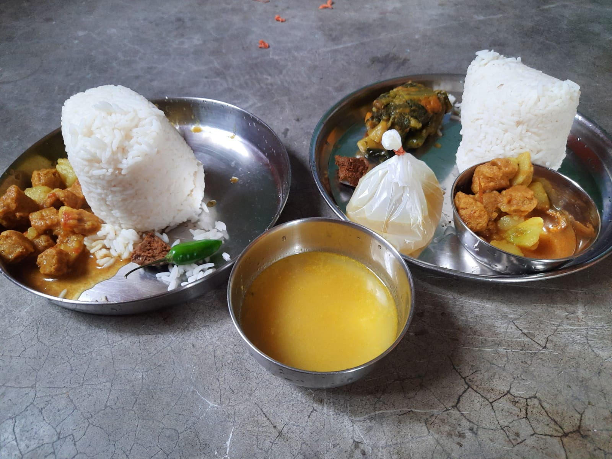
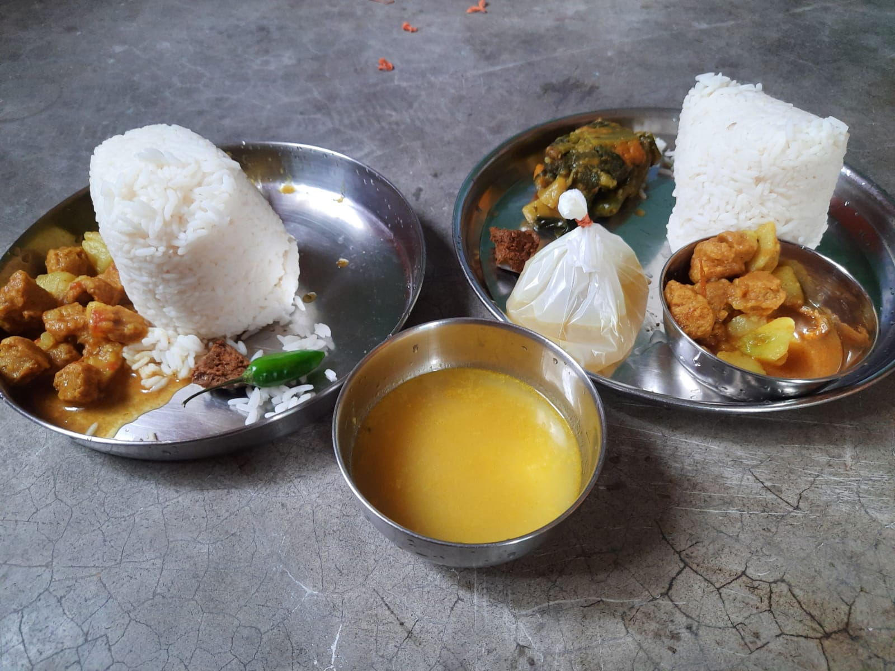

Boys PG Nearby :
PGs here most of all are very affordable, clean suitable for college students to stay and pursue their
studies away from home. Also for food and everything, there are facilities for home delivery *(NOT RECOMMENDED).
Like for instance :
 

So its important not to eat junk and save ourselves :)
Some useful links :